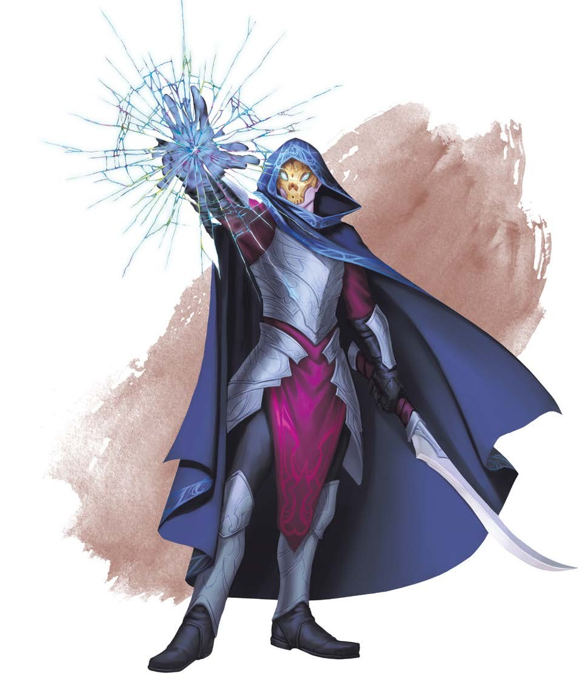

星界地点Astral
Locations
与艾伯伦的十三个位面不同，星界位面并未分层。它是一个单一、看似无限的虚空，其中彩池如星辰般散落。以物质位面的概念来衡量，图纳拉斯与沙罗卡瑟尔之间可能相隔数万甚至数十万英里。这就是为何能找到一处星界隐士居所，那里有位巨人哲学家已经数千年未受打扰……因为除非你知道自己在寻找什么，否则星界位面如此辽阔，任何特定位置都如同广阔沙滩上的一粒沙。
星界位面旅行Travel on the Astral
Plane
这似乎表明遥远的距离会阻止任何星界位面中有意义的旅行。如果图纳拉斯和沙罗卡瑟尔相距十万英里，冒险者如何在这两者之间移动？关键在于星界位面的移动不是用英里，或是用空间来衡量的；它纯粹是一个概念。本章开头的思维之速特性决定了角色在战斗中的速度，那时人们必须专注于短短的瞬间。在战斗之外，穿越星界位面的移动是基于知道你想去那里，并用意念推动自己到达那里。
彩池Color Pools
彩池让旅行者能够离开星界位面；每个彩池都与另一位面中的特定位置相连。要识别它们的星界坐标并开启通道，需要五国人民尚未掌握的魔法工具。前面提到的三个文明――阿贡尼森、艾伦诺和恶毒领――都有确定彩池位置的方法，要么通过专门的仪式，要么使用星界钥匙（在“星界遗物”部分描述）来从任意一侧开启彩池。其中一些钥匙与特定的彩池相连，而另一些则可能开启冒险者能找到的任何彩池坐标。
《地下城主指南》指出，寻找与特定位面相关的彩池大约需要1d4×10小时，而心灵风暴的风险会增加旅行时间。可以将这个过程想成在天空寻找一颗绿色星星，然后用意念推动自己向它前进。在星界位面，每个彩池都表现为一个二维的、波光粼粼的彩色池塘――颜色与所通往位面的月亮相衬，如《探秘艾伯伦》第五章所述。然而，这些彩池坐标在彩池的另一侧通常难以察觉。星界彩池表列出了每个位面的星界彩池的颜色。
星界彩池表
|
d20 |
位面 |
彩池颜色 |
|
1-3 |
物质位面 |
绿 |
|
4 |
达安维 |
金黄 |
|
5 |
达库尔 |
不可能的黑，但传送门无法进入 |
|
6-7 |
杜鲁尔 |
橘红 |
|
8 |
费尼亚 |
银 |
|
9 |
伊瑞安 |
亮灰 |
|
10 |
奇瑞斯 |
珍珠白 |
|
11-12 |
拉曼尼亚 |
淡橘 |
|
13 |
玛伯尔 |
烟灰，显得幽暗 |
|
14 |
瑞西亚 |
淡紫 |
|
15 |
撒瓦拉斯 |
钢灰，有深色斑点 |
|
16-17 |
西拉尼亚 |
蓝灰 |
|
18-19 |
瑟兰尼斯 |
淡蓝 |
|
20 |
瑟瑞奥特 |
暗淡的白，有一条黑色裂口 |
这一切都假设你只是想找到一个随机彩池――但每个星界彩池都与位面内的不同位置相关联。寻找特定的彩池（或寻找类似沙罗卡瑟尔这样的位置）则完全是另一回事。
边栏：银线与灵体形态Silver Cords and Spirit
Forms 进入星界位面有多种方法。可以使用诸如位面转移和异界之门等法术，或开启一个彩池传送门（使用如星界钥匙的物品，在“星界遗物”部分描述）来物理地进入。物理旅行会使旅行者面临永久伤害或死亡的风险，因为他们的身体实际上存在于星界位面。另一方面，星界投影将施法者的灵体与其身体分离，并允许他们以灵体形态进入星界位面，通过一条银线与身体相连。这种旅行方式的优点是你不会受到永久伤害；如果你在灵体形态生命值降为0，你只需返回你的物理身体。不朽评议会的至尊评议员通常以这种灵体形态在星界位面旅行，使他们能够无畏地探索未知区域。
寻找地点Finding
Locations
如果你曾经去过某个地点，通常需要花费1d4×10小时才能到达那里。如果你没有去过，但精通奥秘Arcana并且拥有该地点的描述（一张艾伦诺人的地图、一段从某个库 希尔墓穴中得到的描述），通常需要花费1d8×10小时才能到达目的地。如果你没有特定的目的地，可以尝试根据散布的彩池所形成的星座来导航；最终你总会找到一些东西，无论是只是一个彩池，还是某个更有趣的前哨站或废墟。熟悉星界旅行的角色可以进行一次智力（奥秘）检定来加速旅行；一个成功检定可能会减少旅行时间，并帮助旅行者避开心灵风暴。
艾伦诺的精灵是艾伯伦最著名的星界制图师。不朽评议会的至尊评议员们作为无形的灵体，在星海中花费了无数时间探索，记录了星座间的路径，并标注了有趣的废墟和隐士居所。如果冒险者希望寻求星界位面的冒险，他们可以只是跳入海中开始游泳……但一张艾伦诺人绘制的地图残页能帮助他们启动冒险。
边栏：心灵风暴Psychic
Wind 星界位面的心灵风暴正如《地下城主指南》中所描述的那样运作。它是一种超自然现象，反映了自然界的风暴；多个风暴系统缓慢地横跨这片位面，强度时强时弱。大多数主要定居点都位于心灵风暴的路径之外。当隐士居所或其他建筑可能受到心灵风暴侵袭时，建筑物一般会利用保护屏障抵御它的影响――所以，如果心灵风暴越来越猛烈，试着寻找一个安全的避难所！《地下城主指南》指出，“心灵风暴由丢失的记忆、被遗忘的念头、细微的思绪和潜意识中的恐惧组成”，而DM可以决定把特定的某个心灵风暴与特别的灾难性事件相关。也许有一个风暴系统与吉斯洋基人现实的崩溃有关，而另一个则是在哀悼之日的毁灭后出现的，携带着所有罹难者的记忆。
帕拉斯・瓦图莱Pylas
Var-Tolai
不朽评议会的至尊评议员在星界位面花费了大量时间――他们留下肉体，通过星界投影进行探索。在某种程度上，他们正在绘制近乎无限的广阔空间；艾伦诺人绘制了许多废墟和隐士居所的地图，尽管他们没有打扰到很多隐士。但星界制图只是副业；他们真正兴趣的是更宏大的事物。星界位面是起源之地。如果神话是真的，这里就是创世祖龙奠定创世基石的地方。不朽评议会试图追随�k们的脚步――来创造一个新现实。他们距离这个目标还很遥远，但凭借他们的聚合之力gestalt power*，他们已在虚空之中创造了一个区域――一个他们称为帕拉斯・瓦图莱的岛屿。
*格式塔gestalt
帕拉斯・瓦图莱的核心是一座庞大的要塞式修道院。这里包括一个让僧侣绘制星海地图的抄写室，一个存放他们所探索的所有废墟记录的巨大图书馆，以及一个保险库，用来存放星界发现的奇迹，和被认为过于危险而无法保留在物质位面的遗物。修道院中心设有一个议事厅，至尊评议员在这里相互交流并行使权力。瓦图莱最重要的人口是至尊评议员的星界形态，但这里也有凡世的精灵――学者、祭司和士兵。本节中的瓦图莱祭司Var-Tolai
priest资料卡提供了在星界位面居住和工作的精灵的数据。
帕拉斯・瓦图莱主要是一个研究前哨站，但它也是进行位面贸易的艾伦诺人的中转站；因此，它确实能接待少量客人，通常会有一些旅行者与常驻工作人员在此居住。然而，这座修道院是由研究驱动的，而非商业。如果冒险者来到帕拉斯・瓦图莱的门口，祭祀对他们故事的兴趣将远超过他们的金币。
帕拉斯・瓦图莱最重要的部分是那扇巨大的门。它可以通向不朽评议会的工坊……以及进入他们正在创造的现实。这个领域仍然是一个进行中的作品，易变而不可持续。但他们仍在继续努力。当冒险者来访时，门另一边的位面可能是一个小岛，也可能是一个广阔的大陆。它可能是艾伦诺的完美复制品，也可能是一个违背物理定律的奇妙领域。访问的冒险者可能会被要求探索这个新生的领域――测试评议员的造物并找出它的缺陷。

瓦图莱祭司 中型类人生物（精灵），一般守序中立 护甲等级
18（胸甲，盾牌） 生命值
154（28d8+28） 速度
30尺 力量 敏捷 体质 智力 感知 魅力 11（+0） 14（+2） 12（+1） 15（+2） 18（+4） 13（+1） 豁免
体质+5，感知+8 技能
奥秘+6，宗教+6，察觉+8 感官
黑暗视觉60尺，被动察觉18 语言
通用语，精灵语 CR
10（XP5,900；PB+4） 妖精血统Fey Ancestry。祭祀进行对抗魅惑的豁免检定时具有优势，且魔法效应无法使祭祀陷入睡眠。 动作 多重攻击Multiattack。祭祀进行两次弯刀或不朽之光攻击，并使用重塑现实。 弯刀Scimitar。近战武器攻击：命中+6，触及5尺，单一目标。命中：5点（1d6+2）挥砍伤害。 不朽之光Light of the Undying。远程法术攻击：命中+8，射程100尺，单一目标。命中：8点（1d8+4）光耀伤害。 重塑现实Reshape Reality。祭祀选择100尺范围内他可见的一点开始重塑现实，影响该点为中心20尺宽的立方体区域。该区域内的每个生物必须进行一次DC
16的体质豁免检定。豁免失败的生物受到16点（3d10）力场伤害，祭祀选择区域内他可见的一处未被占据的空间，传送这个生物到那里。豁免成功时，生物受到的伤害减半，且不会被传送。此外，祭祀可以选择以下效果之一，效果持续到祭祀再次使用重塑现实： l��
该区域的地面变成分形*fractal碎片，成为困难地形。当生物进入或位于受影响区域时，每行进5尺，它将受到5（2d4）穿刺伤害。 l��
该区域的引力方向变为祭祀选择的方向。 l��
区域内的每个生物和物件要么被放大，要么被缩小，就像受到变巨术/缩小术影响一样。祭祀为整个区域选择相同的效果。 施法Spellcasting。祭祀使用感知作为施法属性（法术豁免DC 16），准备有以下法术： 随意：神导术、光亮术、无声幻影 每项2次/日：放逐术、任意门、解除魔法、高级幻影 每项1次/日：造物术（作为一个动作）、半位面、幻景 *就是数学上的分形 附赠动作 星界步伐Astral Step。祭祀传送至最多15尺内他可见的一处未被占据的空间，然后祭祀周围5尺内的每个敌人受到4点光耀伤害，祭祀周围5尺内的每个盟友恢复4点生命值。
废墟和隐士居所Ruins and
Hermitages
星界位面可能实际上是无限的，而那片虚空里可能隐藏着任何事物。至少有一个活跃的城市，图纳拉斯（本章后面将描述）；然而，许多其他有趣的地点散布在虚空中，其中大部分是废墟。有些是曾经建立在星界位面的真实城市的遗迹，比如沙罗卡瑟尔。其他则是未知文明或大陆的碎片。这些可能来自这个艾伯伦的遥远过去。它们可能是失落艾伯伦的遗迹，比如吉斯人的艾伯伦。甚至可能是先前创世的遗物，或是比创世祖龙更古老的现实。星界废墟表提供了一些例子。
星界废墟表
|
d12 |
废墟 |
|
1 |
一个巨龙头骨，从吻部到角尖有十英里远；它的形状与任何已知类型的龙都不完全匹配。 |
|
2 |
一座孤零零的塔楼，看起来像是从一座更大的城堡上撕裂下来的。 |
|
3 |
一条巨大的海洋航行船只，其设计风格与吉斯洋基人的星界飞船截然不同。 |
|
4 |
一座由烟灰色水晶形成的山峰。 |
|
5 |
一团银色的云层，柔软但足够坚实得支持站立；它们飘浮变幻，但从不扩散或分离。 |
|
6 |
一只巨大龙龟的空壳；其中有一排排被遗弃的帐篷，位置杂乱无章，如同一个没有人的市场。 |
|
7 |
一丛巨大的树木，根与枝条交织在一起。 |
|
8 |
一座用修复术保存的宅邸，由隐形仆役照料。 |
|
9 |
一个庞大的静止构装体，没有脑袋，有三只手臂和三条腿；微小的蟹形构装体在它的身上爬行。 |
|
10 |
一个温馨的乡村农舍，烟囱里升起袅袅炊烟。 |
|
11 |
一排排黄铜瓮漂浮在中央巨石柱的周围。 |
|
12 |
一座巨大图书馆的一半，被完美地从中间劈开；书籍和卷轴在周围的虚空中飘荡。 |
许多位面都可以找到离奇的建筑；星界位面废墟与瑟瑞奥特怪诞景色的区别在于，星界废墟通常给人一种它们曾具有用途的感觉――它们可能出现在不合时宜的地方，但曾经那艘船在水里，那个头骨是巨龙的一部分。同时，它们与瑟兰尼斯奇迹的区别在于，虽然星界废墟可能具有用途，但它们很少有一个故事――至少，不容易被察觉。那个头骨曾经属于一条龙，但没有更多线索表明那是条什么龙，或它是如何死亡的；如果它曾经是某个故事的一部分，那个故事早已结束。
废墟通常是荒废的。当移民或流放者占据一片废墟时，它就变成了一座隐者居所。由于星界位面的生物免疫饥饿和口渴，人们可以居住于自然世界中永远无法孕育生命的地方。一个庞大的巨龙头骨可能被一群有翼狗头人或三位寻神者*Seekers of the Divinity
Within所占据。同样，与瑟瑞奥特不同，这个领域的居民来自某个其他地方；如果头骨中存在有翼狗头人，他们很可能来自艾伯伦，一个之前的现实，或是一个被遗忘的世界。
*沃尔之血信徒
沙罗卡瑟尔Sharokarthel
在恶魔时代之后，胜利的巨龙遍布世界。他们的支配地位帮助了凯伯尔之女Daughter of
Khyber*的首次崛起，随后爆发了一场毁灭性的巨龙战争，摧毁了他们所创建的国家。一万年后，有个博学之龙提出了一个新想法：当巨龙在艾伯伦扩展势力时，凯伯尔之女汲取了力量，但她本身却被束缚在凯伯尔――那么，如果巨龙不是在物质位面扩张，而是在外层位面扩张呢？这个动机导致了星界位面多个前哨站的建立，最终形成了伟大城市沙罗卡瑟尔。这是一座由巨龙建造、为巨龙而建**的城市――一座由魔法和非物质构成的城市，不受重力或天气约束。在这里，沙罗卡瑟尔的巨龙建造了奥术工坊和位面天球仪，并积累了来自各位面的财富。但最终，这一理论被证明是错误的。凯伯尔之女无法触及沙罗卡瑟尔的巨龙――但随着它们荣耀的持续增长，她能够腐蚀仍留在艾伯伦的巨龙，而这些被腐蚀的仆从可以将战斗带到星界城市。这导致了第二次大崩溃。凯伯尔之女再次被击败，但巨龙被迫放弃了沙罗卡瑟尔。它们没有摧毁这座辉煌的城市，而是在上面施加了强大的结界和诅咒，确保任何偶然的旅行者都无法占有被遗弃的荣耀。
*提亚马特Tiamat
**by
the people, for the people林肯著名演讲
在星界位面有几处巨龙废墟，但沙罗卡瑟尔是其中最宏伟的。它肯定藏有无数奇迹和宝藏，但它受到强大诅咒和陷阱的保护。尽管如此，关于这些防御的记载肯定存在于某处。也许一位人类智者会偶然发现一本详细描述进入沙罗卡瑟尔秘密路径的书……或者，也许一条青年龙会招募一群冒险者陪同他们前往被遗弃的城市，希望能夺回他们古代祖先的一些宝藏。
次元空间Subspace
许多效果――豪宅术，次元袋，次元洞――都利用了超维空间。通常，它们表现为微型半位面，孤立且不相连；其他效果，如秘藏箱，提到了以太位面。然而，这些超维空间实际上可能位于星界位面。一位旅行者可能会遇到一个次元袋，它是一个漂浮的力场气泡，里面装有物体；与此同时，一座豪宅可能悬浮在虚空中。如果情况如此，或许有人能从外部找到并渗透这些空间。
当然，在星界位面找到次元袋的几率，就像在无尽海洋中找到一个掉进去的瓶子。但DM可以决定，使用相同技术创造的物品占据星界位面的同一区域；那里有一个由卡尼斯次元袋组成的星座，一个由伽兰达豪宅组成的街区，或是由昆达拉克保险库网络形成的一个岛屿。如果情况如此，并且有人真的找到了从外部接触这些东西的方法，它可能会引发混乱，迫使各大势力部署额外的安保措施。但与此同时，这无疑可以成为一场史诗级的星界劫案！
图纳拉斯Tu’narath
在他们初到星界时，吉斯洋基人发现了一只有着六根手指的大手漂浮在虚空中――这只手蕴含着奥术力量，与艾伯伦龙晶相似。这只断手的起源仍然是个谜，但吉斯洋基人认为它是有用的资源，也是锚定图纳拉斯的合适基础。大多数吉斯洋基人更喜欢居住在自己的飞船上，但图纳拉斯是城市飞船汇聚的港口，是吉斯洋基人卸下他们从其他位面掠夺的战利品，并讲述他们辉煌战斗的地方。如果他们计划发动征服，这里就是他们集结军队的地方。
吉斯洋基人对外人毫无好感；如果你想找个友好的地方进行商业活动，可以去西拉尼亚的无限集市。然而，图纳拉斯的第六指Sixth
Finger基本上是一个外国区，在这里旅行者可以找到住宅，并体验一些吉斯人从现实各处掠夺的奇迹。这是一个犯罪高发的地区，你会找到流放者、星界囚犯和更糟糕的人――但如果你在寻找一个星界向导或一些异国风情的位面战利品，你可以选择在图纳拉斯登陆。